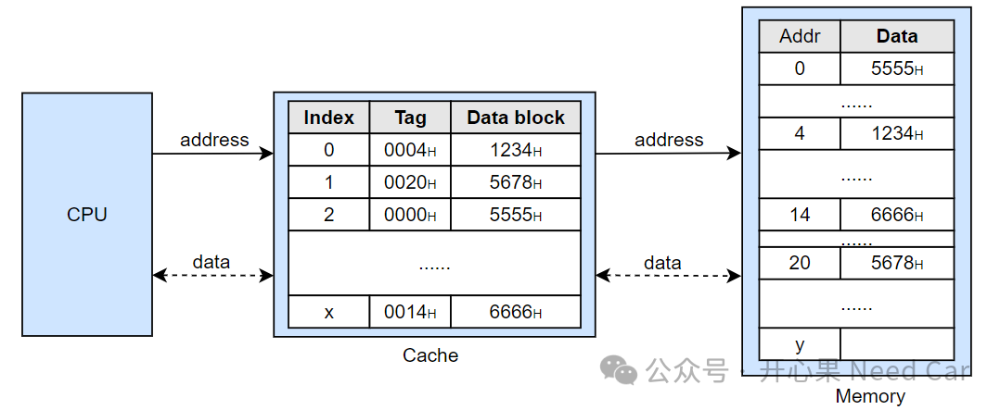
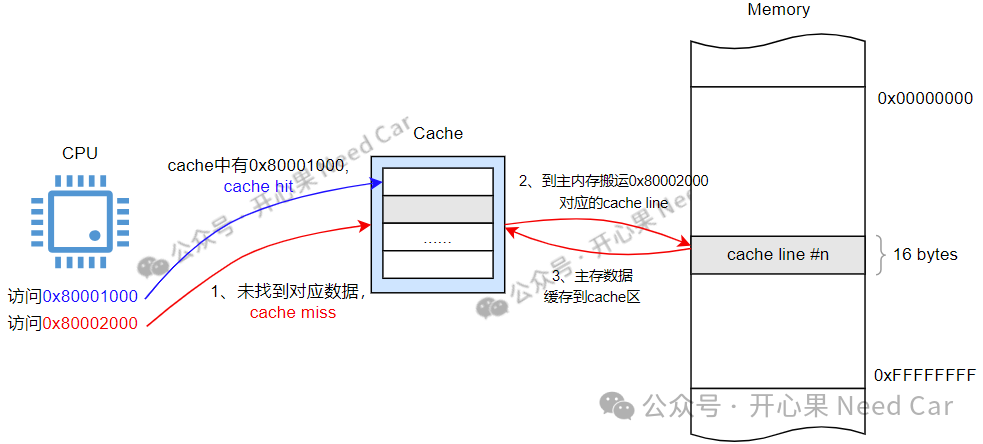
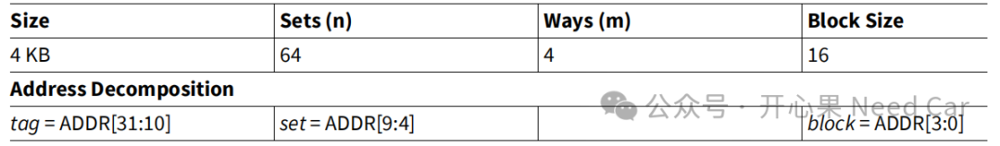
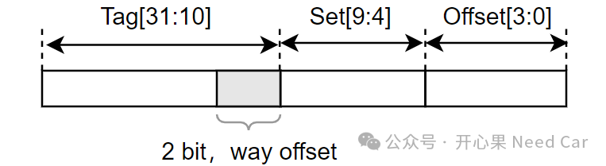
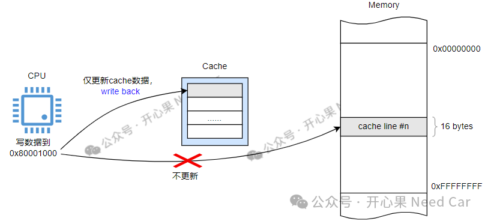
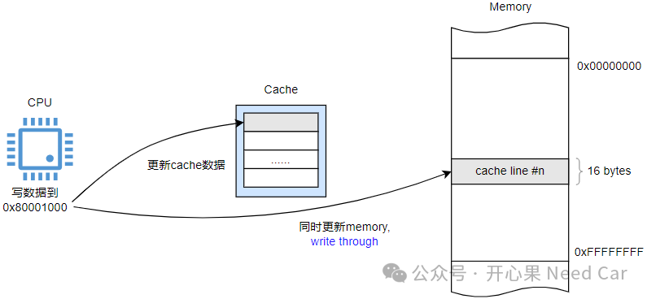
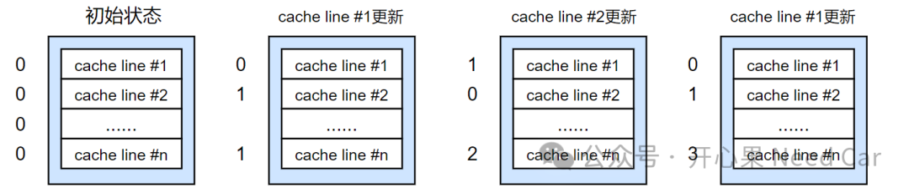

目前，车规级的MCU中，不管是何种架构，一般都会支持缓存（cache）功能。具有cache功能的芯片，功能开启以后，芯片的处理效率会大大提升。那么，cache为什么会提高性能呢？cache的原理是什么呢？芯片中的cache原理又是什么呢...cache是介于CPU与主存（Memory）之间的高速缓冲存储器，一般属于SRAM（Static RAM）。CPU、Cache、Memory三者之间的关系如下所示：

设计cache的主要目的是为了解决CPU与主存（memeory）之间，速度不匹配问题。由于CPU工作速度远远高于主存数据操作速度，因此，CPU会有"大量时间"处于等待状态，为了让CPU更快的获取数据（data）并工作，设计了一块比主内存更小、速度更快的cache区域，cache离CPU更近。如果CPU访问的数据在cache中，则将数据直接送给CPU，这个过程称为缓存命中（cache hit）；如果CPU访问的数据不在cache中，则需要去主内存搬运数据，这个过程称为缓存丢失（cache miss）。示意如下：
3、cache的组关联映射（set-associative）
由于cache区域本身比主内存区小，无法一次装载内存区的所有信息，那么cache就需要分批次搬运主内存区数据。既然分次搬运主内存区数据，就会涉及怎么搬运，如何搬运的问题。cache区如何更合理的缓存memory数据呢？如果搞清楚这个问题，就需要理解cache与memory的映射关系。cache与memory映射关系有三种：全映射（fully associative）、直接映射（direct associative）、组关联映射（set-associative）。实际芯片中，set-associative方式最为常见。本文，着重讨论set-associative。（一）基本概念
在一些芯片手册中，关于cache的章节，可以看到类似如下的描述：

提示：如果芯片支持cache功能，一般情况下，cache默认使能。
如何理解如上名词呢？理解这些名词之前，需要先理解目标芯片的物理内存及cache的表示方式。结合上图，如果芯片带宽为32 bit，则可以寻址的范围：0x00000000~0xFFFFFFFF。其中，cache大小4KB，分成64个组，即：Sets(n)，每个set大小 = 4*1024 / 64 bytes = 64 bytes，每个set包含4个cache line（上图中的way），每个cache line包含16 bytes，示意如下：所以，cache话题中，对应的单位大小：set（组，包含多个缓存行）＞cache line（缓存行，也称为缓存块，cache block）＞ n bytes（每个缓存块可以缓存的字节个数）。
提示：cache line是cache和memory之间数据交互的最小单位，cache line也称为block。理解了cache与memory的划分以后，我们就需要关注：CPU操作某个内存地址（address）数据时，内存地址如何对应到cache区，cache区又是如何对应memory呢？1、每个cache line（也称为cache block）可以包含16 bytes数据，因此，可以用4 bit（2^4）遍历16个bytes在cache line中的位置，因此，block = ADDR[3:0]用于表示某个数据位置在cache line中的偏移（offset）。比如：0x80004001，ADDR[3:0] = 0001b，即：查找0x80004001对应cache line的offset = 1地址。2、既然整个cache（本文共4Kb）分成了64个set（组），就需要锁定目标地址所在的set，因此，可以用6个bit（2^6）遍历64个set，因此，set=ADDR[9:4]用于表示数据所在的组（set）。比如：0x80004001，ADDR[9:4] = 000000b，即：查找0x80004001对应set=0。3、知道了目标地址所在的set及offset，那么，就需要确认cache中是否缓存了数据，以及缓存的数据是否有效，或者缓存的数据是否需要重新去memory中搬运...所以，这就需要一定的控制信息加以识别，也就是Tag，tag=ADDR[31:10]用于表示控制信息。比如：0x80004001，ADDR[31:10] = 1000 0000 0000 0000 0100 00b。
为了识别数据在set中的way偏移，可以在tag中拆分一定数量的bit识别way，如果是4-way associactive，用2 bit（2^2）即可遍历一个set中的所有way，示意如下：

Tag中包含的信息，与芯片的设计有关，不同的芯片类型，Tag信息以及信息表示的位置会有所不用，有些信息会包含在内部的Tag中，对外不可见，示意如下：
Valid：cache line是否有效
Dirty：是否是脏数据
由于cache内存较小，在数据搬运频繁的情况下，cache可能被写满，当cache内存被写满或者覆写时，cache数据需要写回主存。本文聊一下write back方式和write through方式。
写回（write back）：写数据操作时，只更新cache，数据未同步写入主存，只有当数据需要被替换时，再写入主存储区，该方式称为write back。示意如下：

提示：如果写cache未命中，则需要将主存区数据搬运到cache，再更新cache。
写通（write through）:将数据同时写入cache和主存的行为称为write through。示意如下：
如果cache被写满了，CPU写新的内存地址数据时，怎么办呢？一般情况下，可以使用替换策略，eg：LRU（Least Recently Used，最近最少使用）策略，即：最近更新最不频繁的cache line被替换出去。如下：为每个cache line设定一个计数器，且初始计数为0，示意如下：

1、更新cache line #1时，cache line #1的计数器设置为0，表示cache line #1最近被更新，其他未更新的cache line计数器累加1；
2、更新cache line #2时，cache line #2的计数器设置为0，表示cache line #2最近被更新，其他未更新的cache line计数器累加1；
3、再次更新cache line #1时，cache line #1的计数器设置为0，表示cache line #1最近被更新，其他未更新的cache line计数器累加1。如此往复，当Set中所有的cache line 写满，需要替换cache line时，替换掉计数最大的cache line，这就是LRU的基本原理。
当然，还有Random Replacement（随机替换）、FIFO（先进先出）、LFU（least frequently used，最不经常使用）等替换策略，本文不展开。总结：本文主要讨论了cache是什么，为什么使用cache，以及如何理解芯片中的cache信息。
点击下方关注，一起聊聊Autosar/嵌入式，如果需要，联系作者进群，给你更专业的解答